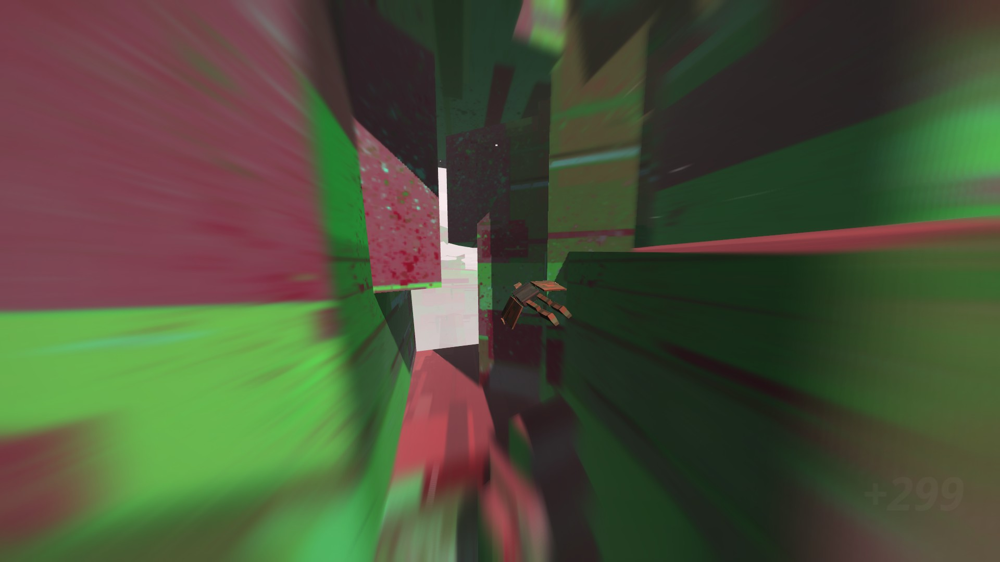
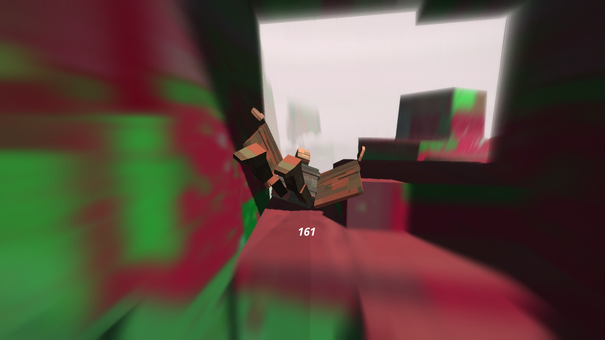
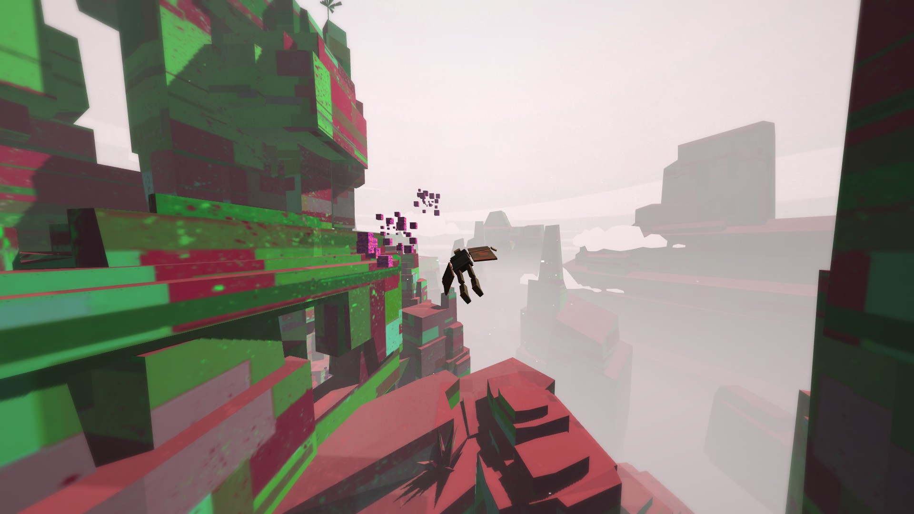

Procesador: Intel Core i3 2.99 GHz o AMD equivalente.
Ram: 2GB.
Video: NVIDIA GeForce 650 o superior.
Disco: 200MB Libres.
Sinopsis
Es un título que nos dará la oportunidad de planear entre muros de rocas gigantes. La sensación de libertad es magnífica al oír el sonido del viento silbar mientras caemos en picada esquivando obstáculos.

Vamos a encontrarnos una gran cantidad de obstáculos por los que pasar.
Este juego lo pesque de sorpresa en la tienda de steam ya que estuvo de oferta al 50%. Fue creado por tres estudiantes de GameDesign, por lo cual nos encontramos ante un título 100% indie. El motor gráfico que usaron fue el de Unity, este es muy bueno para comenzar en el mundo del desarrollo de videojuegos.
Gráficamente el juego no nos dice demasiado, pero dice lo justo. Hace unas combinaciones de colores realmente muy llamativas con una puesta de partículas en el aire que le da un tono más llamativo al ambiente.

A mayor velocidad mejor puntuación.
Lo que acompaña y lo hace realmente bien es su sonido ambiental. No esperes una gran banda sonora detrás del título porque no lo hay. Solamente contaremos con el sonido del viento, el cual a medida que aumenta nuestra velocidad este se hace mas fuerte.
En cuanto a las mecánicas solo nos bastara con los botones de movimiento, ( A , W , S , D ) o el stick izquierdo de nuestro mando. La idea que se plantea es el planear y caer en picada para esquivar o pasar entre medio de rocas muy pegadas. A más velocidad y proximidad pasemos de estas mayor será la puntuación, así como más difícil sea la proeza aún mayor serán los puntos recibidos.

Los portales son una buena manera de saltar de mapa y continuar nuestro score.
Conclusion Final
Como verán es un juego en el que realzan las puntuaciones, por lo que cuenta con un sistema de marcadores en Steam, dándonos la posibilidad de competir para llegar al primer puesto.
Hay veces que el escenario te crea cuevas que al final no tienen salida.
Fuera de esto es un juego casual para disfrutar y re-jugar cuando andes aburrido.